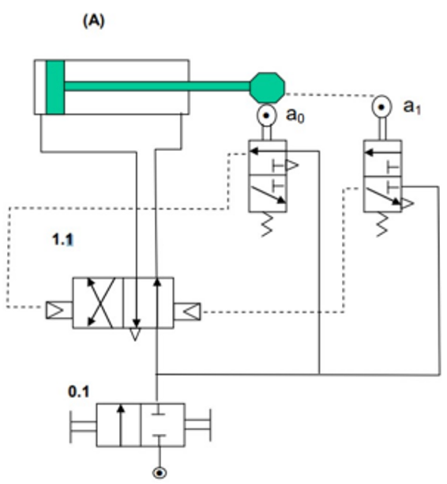

EBAU 2025 · Tecnología e Ingeniería II · Castilla y León · Extraordinaria
El ejercicio consta de cuatro apartados obligatorios. El primero tiene una única pregunta; en los otros tres se elige una de las dos. Aquí se resuelven todas. Selecciona un apartado o una pregunta en la barra lateral.
Apartado 1 · Propiedades y ensayo (obligatoria)
Ensayo de tracción de una barra de aluminio a partir de su diagrama tensión–deformación.
Apartado 2 · Estructuras / Máquinas térmicas
Elige: viga con carga puntual o bomba de calor de Carnot (energías aportada y retirada).
Apartado 3 · Neumática / Corriente alterna
Elige: circuito neumático con finales de carrera o circuito RLC en serie.
📄 Enunciado
Cuestión. ¿En qué consiste el ensayo Charpy? (0,5 ptos.)
Problema. Una barra de aluminio de 1 m de longitud y 20 mm de diámetro se somete a una fuerza P de tracción. La figura muestra su diagrama tensión–deformación.
- Determina la longitud que adquiere la barra si P = 3 kN. (1 pto.)
- Determina el módulo de elasticidad del material. (1 pto.)
💡 ¿Qué vamos a aplicar?
Sección \(A=\frac{\pi D^2}{4}\). Tensión \(\sigma=F/A\). El módulo de elasticidad es la pendiente de la recta elástica, \(E=\sigma/\varepsilon\). En la zona elástica \(\Delta L=\varepsilon L_0=\frac{\sigma}{E}L_0\).
Cuestión · ensayo Charpy
El ensayo Charpy mide la resiliencia/tenacidad: un péndulo golpea una probeta entallada y se mide la energía absorbida en la rotura (diferencia de altura del péndulo antes y después). Indica la resistencia del material al impacto.
Sección: \(A=\frac{\pi\cdot20^2}{4}=314{,}16\ \mathrm{mm^2}\).
a) Longitud con P = 3 kN
9,55 MPa < 12 MPa (límite proporcional) → zona elástica. Con E = 100 GPa (apartado b):
b) Módulo de elasticidad
Se toma la pendiente de la recta inicial, hasta el límite proporcional (σ ≈ 12 MPa, ε ≈ 0,00012):
📄 Enunciado
Problema. La viga de la figura tiene aplicada la fuerza puntual indicada (P = 5000 N).
- Calcula las reacciones en los apoyos. (0,5 ptos.)
- Calcula los esfuerzos cortantes y momentos flectores. (1,25 ptos.)
- Representa los diagramas. (0,75 ptos.)
💡 ¿Qué vamos a aplicar?
Equilibrio: \(\sum M_A=0\), \(\sum F_y=0\). Cortante constante por tramos; momento máximo bajo la carga.
a) Reacciones
b) Cortantes y momentos
A–B (0–4 m): V = +3000 N. B–C (4–10 m): V = 3000 − 5000 = −2000 N. Momento en B: M = 3000·4 = 12000 N·m.
c) Diagramas
📄 Enunciado
Cuestión. Explica el ciclo termodinámico de los motores de cuatro tiempos de encendido provocado (MEP) y dibuja la gráfica p–V. (0,75 ptos.)
Problema. Un local con exterior a 5 °C necesita una bomba de calor de 10 kW para mantener el interior a 22 °C (ciclo de Carnot reversible). Calcula:
- La eficiencia de la máquina. (0,5 ptos.)
- La energía aportada al interior en una hora. (0,5 ptos.)
- La energía retirada al exterior en una hora. (0,75 ptos.)
💡 ¿Qué vamos a aplicar?
COP de Carnot: \(\mathrm{COP}=\frac{T_c}{T_c-T_f}\). El calor aportado \(\dot Q_c=\mathrm{COP}\cdot\dot W\); la energía en una hora es \(Q=\dot Q\cdot t\). Balance: \(Q_f=Q_c-W\).
Cuestión · ciclo MEP de 4 tiempos (Otto)
Cuatro tiempos: admisión (entra mezcla aire-gasolina, isóbara), compresión (adiabática), explosión-expansión (la bujía inflama la mezcla: combustión isócora + expansión adiabática que da el trabajo) y escape (salida de gases). En p–V, el ciclo Otto ideal: dos adiabáticas y dos isócoras; el área encerrada es el trabajo. \(\eta=1-\frac{1}{r_c^{\gamma-1}}\).
a) Eficiencia (COP)
Tc = 22 °C = 295 K, Tf = 5 °C = 278 K.
b) Energía aportada al interior en 1 hora
c) Energía retirada al exterior en 1 hora
📄 Enunciado
Problema. En el circuito neumático de la figura:
- Describe los distintos elementos. (1,25 ptos.)
- Explica el funcionamiento. (1,25 ptos.)

💡 ¿Qué vamos a aplicar?
Se identifican el actuador, el distribuidor con memoria (5/2 doble pilotaje) y las válvulas de mando (finales de carrera 3/2 con rodillo). El ciclo es un automatismo de vaivén: cada final de carrera pilota el distribuidor hacia el movimiento contrario.
a) Elementos
- A (1.0) — Cilindro de doble efecto (avanza y retrocede con aire a presión).
- a₀ — Válvula 3/2 con rodillo (final de carrera) que detecta el cilindro recogido.
- a₁ — Válvula 3/2 con rodillo que detecta el cilindro extendido.
- 1.1 — Distribuidor 5/2 con doble pilotaje neumático (válvula de memoria): dirige el aire a cada cámara.
- 0.1 — Válvula 3/2 de puesta en marcha (arranque del circuito).
b) Funcionamiento (ciclo de vaivén A+ / A−)
Al dar la señal de marcha (0.1), el aire pilota el distribuidor 1.1 y el cilindro avanza (A+). Al llegar al final, acciona el rodillo a₁, que pilota el distribuidor por el otro extremo y el cilindro retrocede (A−). Al volver, acciona a₀, que vuelve a pilotar el avance, repitiéndose el ciclo automáticamente. Por ser un distribuidor con memoria, mantiene la posición aunque cese la señal, hasta recibir la contraria.
📄 Enunciado
Problema. En un circuito serie con corriente eficaz 1,2 A hay una resistencia, una bobina de 0,4 H y un condensador de 20 µF, con 230 V eficaces y 50 Hz. Calcula:
- La resistencia del circuito. (0,75 ptos.)
- El factor de potencia. (0,25 ptos.)
- El balance de potencias. (0,75 ptos.)
- Dibuja el triángulo de potencias. (0,75 ptos.)
💡 ¿Qué vamos a aplicar?
\(X_L=2\pi f L\), \(X_C=\frac1{2\pi f C}\). \(Z=V/I=\sqrt{R^2+(X_L-X_C)^2}\Rightarrow R\). \(\cos\varphi=R/Z\). \(P=I^2R\), \(Q=I^2(X_L-X_C)\), \(S=VI\).
a) Resistencia
b) Factor de potencia
Como XC > XL, el circuito es capacitivo (corriente en adelanto).
c) Balance de potencias
d) Triángulo de potencias
📄 Enunciado
Cuestión. Explica qué ventajas prácticas aporta la simplificación de funciones lógicas y enumera los principales métodos. (0,75 ptos.)
Problema. Una alarma f con cuatro sensores a, b, c, d: suena con tres o cuatro sensores activos; con dos activos es indiferente (0 ó 1); nunca con uno o ninguno.
- Tabla de verdad. (0,5 ptos.)
- Mapa de Karnaugh. (0,5 ptos.)
- Función más simplificada y su circuito. (0,75 ptos.)
💡 ¿Qué vamos a aplicar?
La función es la mayoría (≥3 de 4). Las combinaciones de exactamente dos sensores son indiferencias (X), que aprovechamos en el Karnaugh para simplificar al máximo.
Cuestión · ventajas de simplificar y métodos
Ventajas: menos puertas y entradas → circuito más barato, rápido, con menos consumo y más fiable. Métodos principales: álgebra de Boole (propiedades y teoremas de De Morgan), mapas de Karnaugh y el método tabular de Quine-McCluskey.
a) Tabla de verdad (X = indiferencia)
| nº de 1 | combinaciones | f |
|---|---|---|
| 0 ó 1 | 0000, 0001, 0010, 0100, 1000 | 0 |
| 2 | 0011, 0101, 0110, 1001, 1010, 1100 | X |
| 3 | 0111, 1011, 1101, 1110 | 1 |
| 4 | 1111 | 1 |
b) y c) Karnaugh, función y circuito
En el mapa de 4 variables agrupamos los 1 (minitérminos 7, 11, 13, 14, 15) aprovechando las indiferencias de dos sensores. Cada par de variables (p. ej. a·b y c·d) forma un cuadrado de cuatro casillas que cubre los unos usando indiferencias. La función mínima resulta:
(otras parejas equivalentes: \(a c+b d\) ó \(a d+b c\)). Se comprueba: con tres o cuatro sensores siempre hay al menos una de las dos parejas activa; con uno o ninguno, ninguna. Circuito: dos puertas AND (a·b y c·d) y una OR.
📄 Enunciado
Cuestiones.
- ¿Cuál es la rama de la IA que traduce texto de un idioma a otro? Pon un ejemplo de servicio actual. (0,5 ptos.)
- En un control en lazo cerrado, ¿qué función realiza el comparador? (0,5 ptos.)
Problema. Calcula la función de transferencia Y(s)/R(s) del sistema de la figura. (1,5 ptos.)
💡 ¿Qué vamos a aplicar?
Se resuelve de dentro afuera: el lazo interno (G3 con H1) se reduce a \(\frac{G_3}{1+G_3H_1}\); con G2 en serie y realimentación unitaria exterior se obtiene la función total.
a) IA para traducir idiomas
Es el Procesamiento de Lenguaje Natural (PLN), en concreto la traducción automática. Ejemplo actual: Google Translate o DeepL, que traducen texto (y voz) entre idiomas en tiempo real.
b) El comparador
El comparador (sumador/restador) calcula el error: resta a la señal de referencia la señal realimentada (salida medida). Ese error es lo que el controlador usa para corregir el sistema.
Problema · Y/R
Sea W la salida del primer sumador: \(W=G_1R-Y\) (realimentación unitaria exterior). El segundo sumador y G3 con su lazo H1: